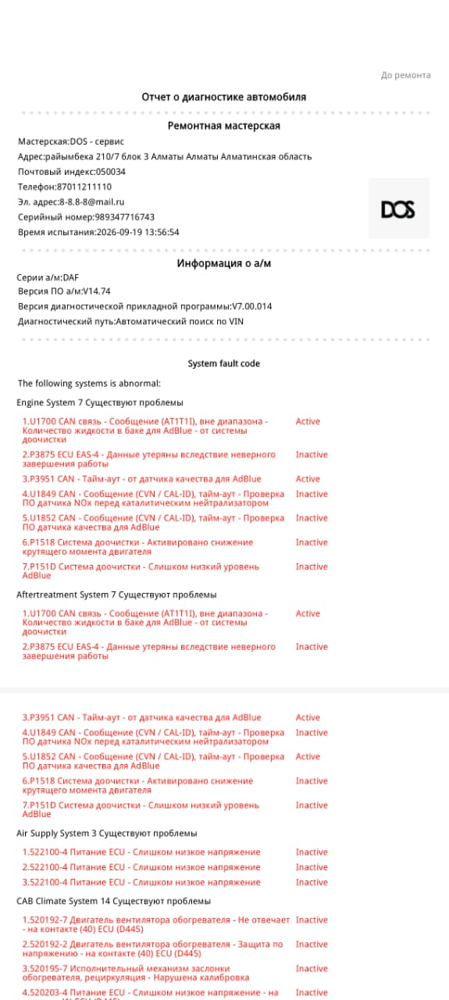
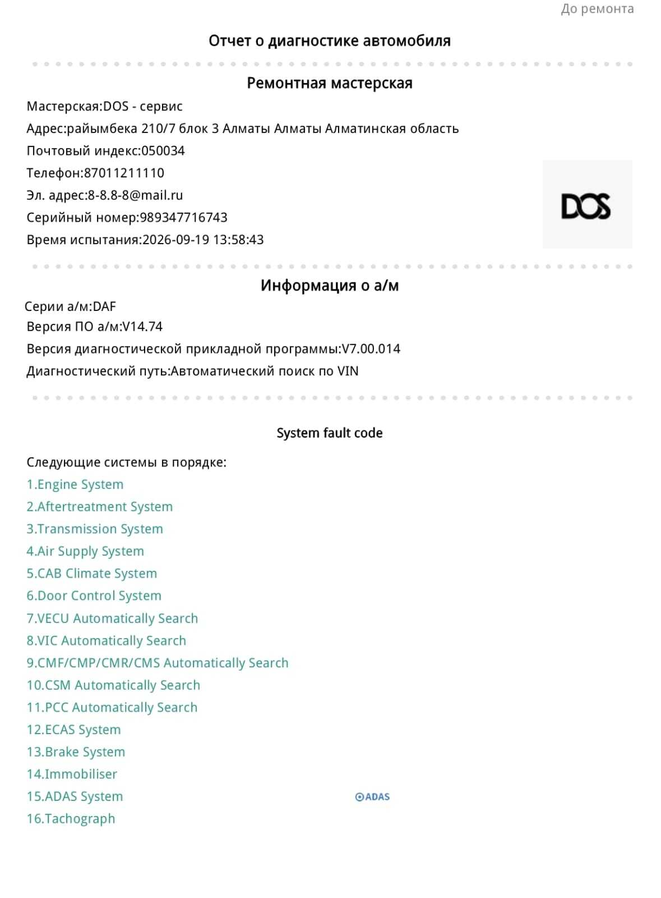
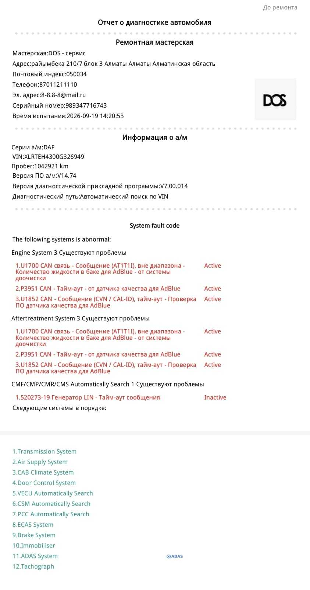
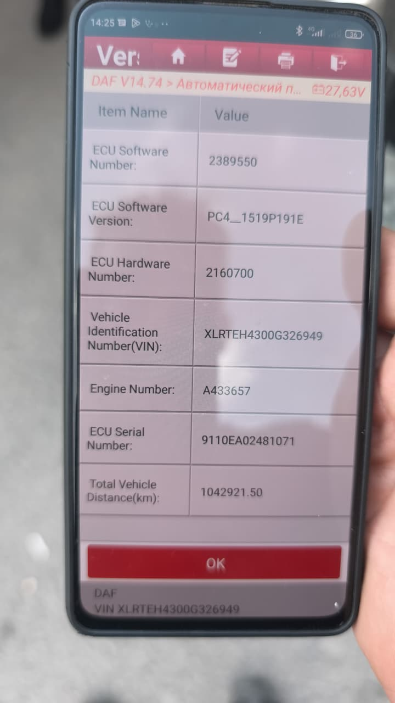

🚛 DAF 106 — компьютерная диагностика перед покупкой выявила пробег более 1 000 000 км
Пример работы по услуге «Компьютерная диагностика грузовых авто» — проверка свежепригнанного грузового автомобиля DAF 106 перед покупкой.
Перед диагностикой был заявлен пробег около 400 000 км. Основная задача заключалась в том, чтобы проверить электронные системы автомобиля, посмотреть имеющиеся ошибки, текущие параметры и отдельно проверить информацию о пробеге.
В результате именно компьютерная диагностика стала одним из решающих факторов при принятии решения об автомобиле.
📋 Задача диагностики
🚛 Автомобиль: DAF 106
🛣️ Заявленный пробег: около 400 000 км
🌍 Автомобиль: свежепригнанный
💻 Задача: комплексная компьютерная диагностика перед покупкой
Необходимо было:
🔎 проверить ошибки по электронным блокам;
📊 посмотреть текущие параметры;
🧹 удалить сохранённые ошибки и выполнить повторную проверку;
🚛 проверить автомобиль после запуска двигателя;
🛣️ проверить фактические данные о пробеге.
💻 Первичная компьютерная диагностика DAF 106

При первом подключении диагностического оборудования в памяти автомобиля присутствовали ошибки по различным электронным блокам.
Для свежепригнанного грузового автомобиля наличие сохранённых ошибок не всегда означает, что все они являются действующими неисправностями.
Часть кодов могла остаться в памяти после предыдущих ремонтов, отключения аккумуляторов, падения напряжения или других событий.
Поэтому было принято решение удалить сохранённые ошибки и провести диагностику повторно.
🔄 Сброс ошибок и повторная проверка

После удаления кодов неисправностей была выполнена повторная компьютерная диагностика.
Сразу после сброса ошибки повторно не появились.
Однако на этом проверку не закончили.
Следующим этапом был произведён запуск двигателя, после чего электронные системы автомобиля снова были проверены диагностическим оборудованием.
Именно после запуска часть неисправностей проявилась повторно.
⚠️ После запуска появились действующие ошибки
При повторной диагностике после запуска двигателя появились ошибки по нескольким системам:
💧 система AdBlue;
⛽ топливная система;
🔥 автономный отопитель (автономка).
Таким образом удалось отделить часть ранее сохранённых ошибок от неисправностей, которые проявлялись непосредственно при работе автомобиля.
Это один из важных моментов при диагностике грузовика перед покупкой: недостаточно просто считать список кодов неисправностей.
Иногда необходимо удалить старые ошибки, запустить автомобиль и посмотреть, какие из них появятся снова.

🛣️ Самое важное — проверка пробега DAF 106

Наиболее значимый результат диагностики был получен при проверке информации о пробеге автомобиля.
Продавцом был заявлен пробег:
📍 около 400 000 км
Однако при компьютерной проверке электронных данных автомобиля выяснилось, что фактические данные о пробеге превышают 1 000 000 км.
То есть обнаруженные при диагностике значения существенно отличались от заявленных перед покупкой.
Для грузового автомобиля такая разница имеет большое значение.
Пробег влияет на оценку общего износа:
🔧 двигателя;
⚙️ коробки передач;
⛽ топливной аппаратуры;
💧 системы AdBlue;
🚛 ходовой части;
🔥 дополнительного оборудования;
⚡ электрических и электронных систем.
Поэтому проверка пробега стала критически важной частью проведённой диагностики.
❌ От покупки автомобиля отказались
После завершения компьютерной диагностики потенциальный покупатель получил информацию о состоянии электронных систем DAF 106.
Были выявлены повторно появляющиеся ошибки по AdBlue, топливной системе и автономному отопителю, однако наиболее существенным фактором стало расхождение по пробегу.
При заявленных примерно 400 000 км диагностические данные указывали на пробег более 1 000 000 км.
После получения результатов проверки было принято решение не завершать сделку и отказаться от покупки данного автомобиля.
✅ Что показала компьютерная диагностика?
В рамках проверки DAF 106:
💻 проведена полная компьютерная диагностика;
🔎 проверены электронные блоки автомобиля;
📊 просмотрены текущие параметры;
🧹 выполнен сброс сохранённых ошибок;
🔄 проведена повторная диагностика;
🚛 автомобиль запущен и проверен ещё раз;
💧 после запуска появились ошибки системы AdBlue;
⛽ выявлены ошибки топливной системы;
🔥 появились ошибки автономного отопителя;
🛣️ проверены электронные данные о пробеге;
❗ вместо заявленных 400 000 км обнаружены данные, указывающие на пробег свыше 1 000 000 км;
🚫 по результатам проверки потенциальный покупатель отказался от автомобиля.
🔍 Почему грузовой автомобиль желательно диагностировать перед покупкой?
Внешнее состояние свежепригнанного грузовика не всегда позволяет объективно оценить его техническую историю.
Компьютерная диагностика может дать дополнительную информацию о состоянии электронных систем, текущих неисправностях и сохранённых событиях.
Особенно полезно не ограничиваться одним считыванием ошибок, а выполнить последовательную проверку:
первичная диагностика → сохранение результатов → сброс ошибок → запуск автомобиля → повторная диагностика → анализ текущих параметров и доступных данных о пробеге.
История с DAF 106 хорошо показывает практическую пользу такой проверки: при заявленных 400 000 км диагностические данные указали на пробег свыше миллиона километров, после чего от покупки автомобиля отказались.
🌐 Компьютерная диагностика грузовых Олег
☎️ 8-701-121-11-10 Олег
Читайте также: «Sinotruk 2025 — диагностика перед покупкой, проверка VIN, пробега и GSM/GPS» и «Компьютерная диагностика автобусов».